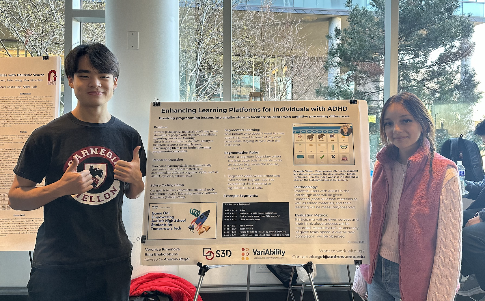
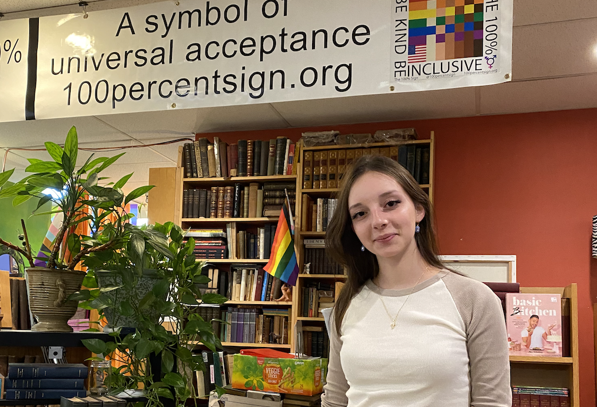
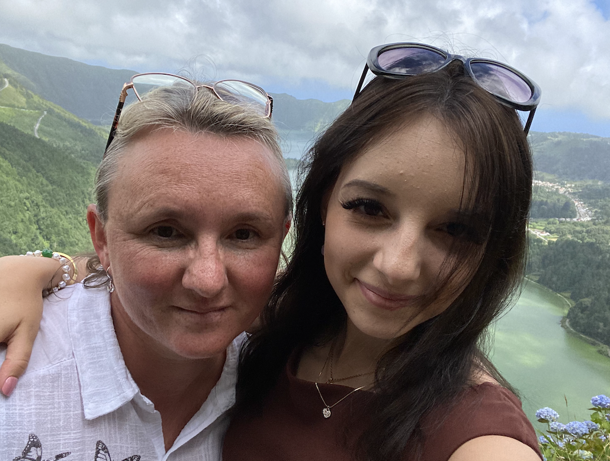
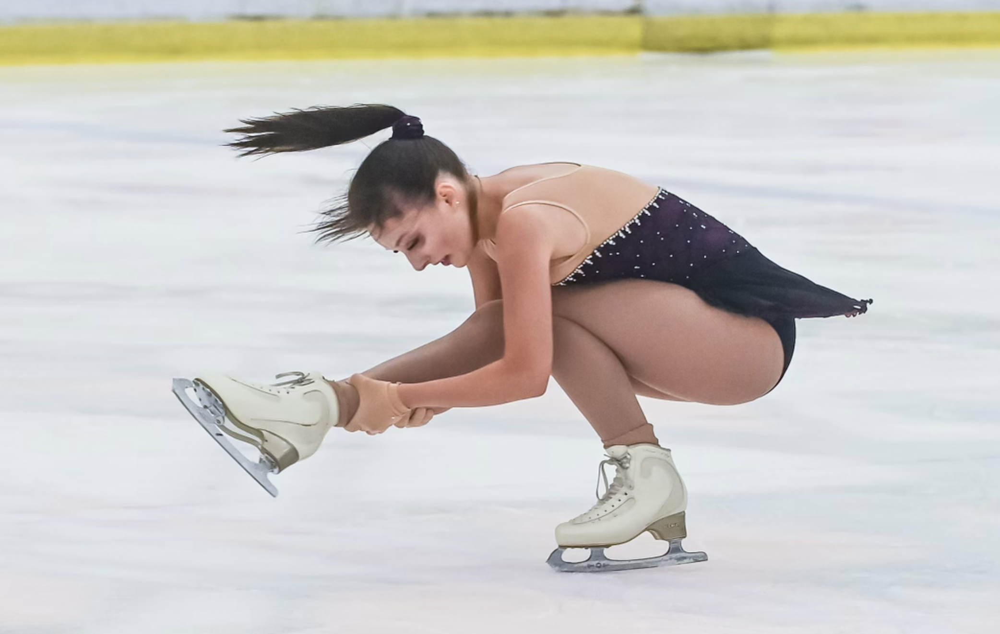
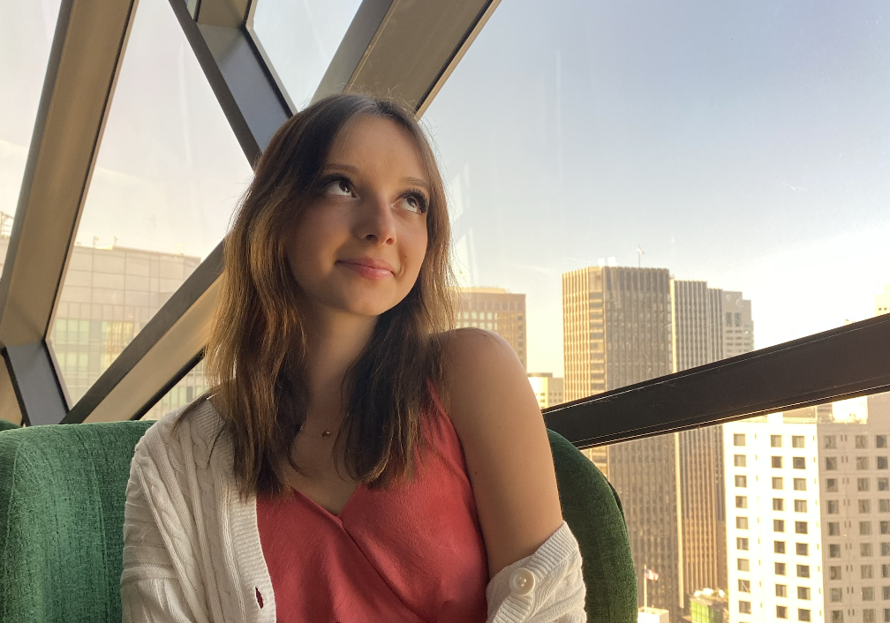

I believe in equity and equality for all. I envision a future in technology where no one is left behind, regardless of their background, abilities, or identity. These core values shape my research and work, but more importantly, they guide how I live my life, interact with others, and approach challenges.
My identity is shaped by the groups I identify with, and each of these plays a key role in influencing my perspective. These identities include:
A Woman
As a woman in STEM, I’ve navigated environments where I was often the only woman in the room. This has fueled my passion for making technology and education more inclusive for everyone.

Neurodivergent
Being neurodivergent has shaped the way I approach challenges and problem-solving, allowing me to view the world from a unique perspective. It also inspires my research into accessibility and inclusivity.

Bilingual/First-Generation American
Growing up as a first-generation American with Russian roots has deeply influenced my identity. Being bilingual allows me to bridge cultural gaps and connect with diverse communities.

A Figure Skater
I’ve been figure skating since childhood, and it remains one of my greatest joys. Skating teaches me discipline, creativity, and resilience, all of which carry into my personal and professional life.

A Dreamer
I’ve always believed in the value of resilience and dreaming. I find inspiration in art, particularly poetry, which allows me to connect deeply with my emotions and aspirations. Poetry reminds me that even in times of adversity, there is beauty to be found and lessons to be learned.
One of my favorite quotes that resonates with me is:
“Ever since my house burned down, I now own a better view of the rising moon.”
This sentiment reflects my approach to life—turning challenges into opportunities for growth and embracing the unexpected beauty that comes with change.

Chasing dreams with optimism and determination.